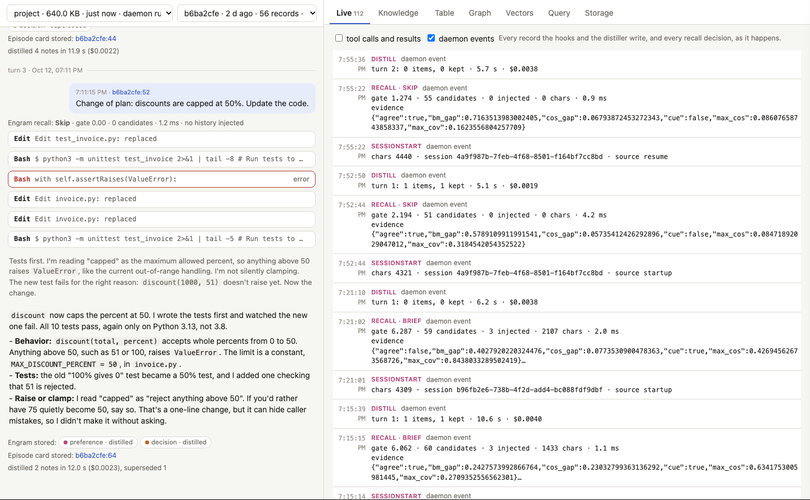
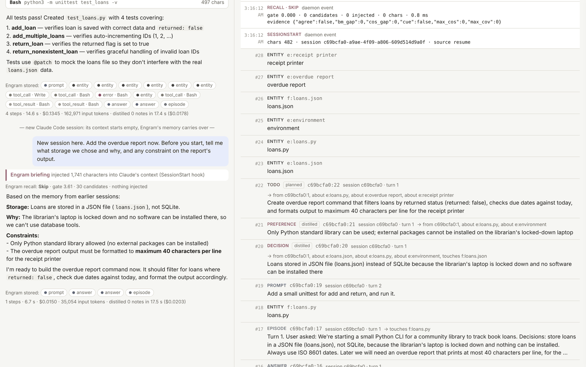
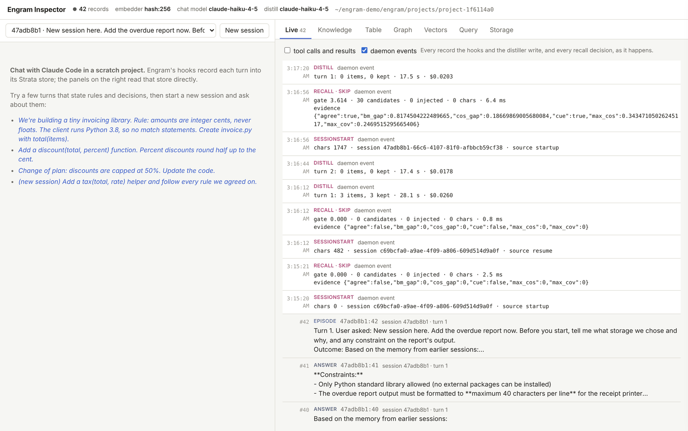
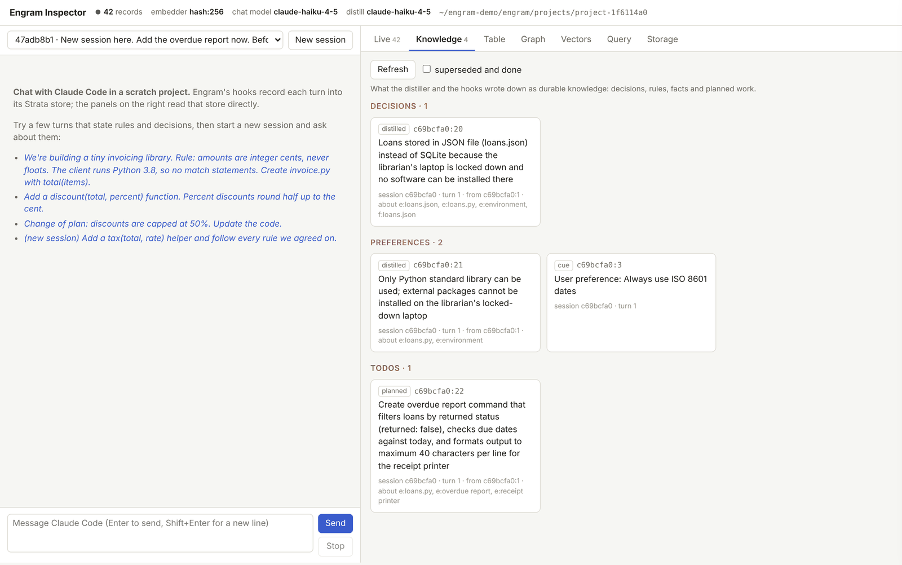
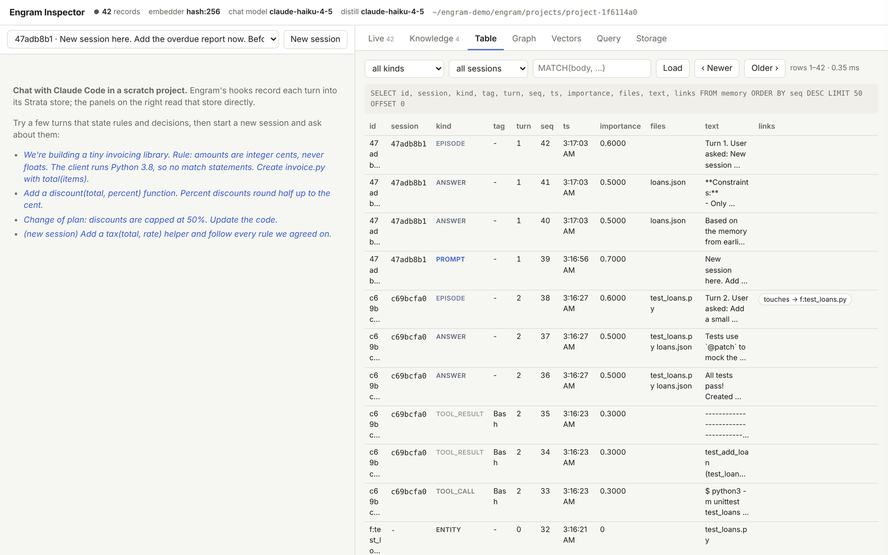
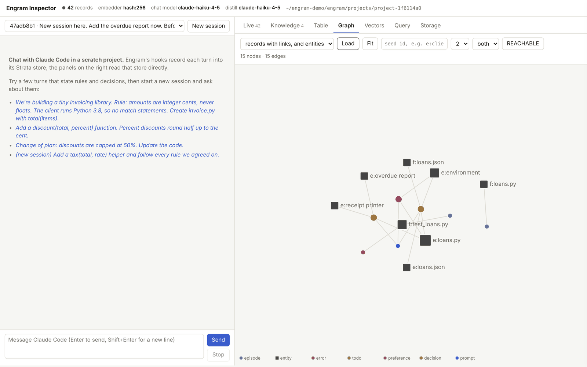
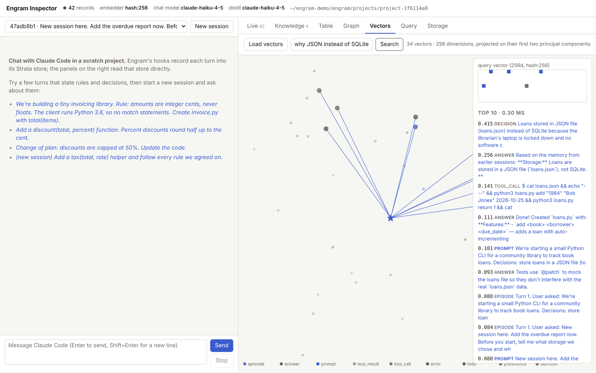
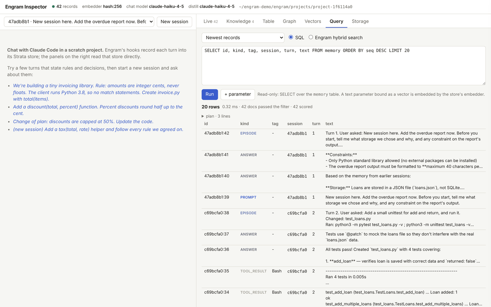
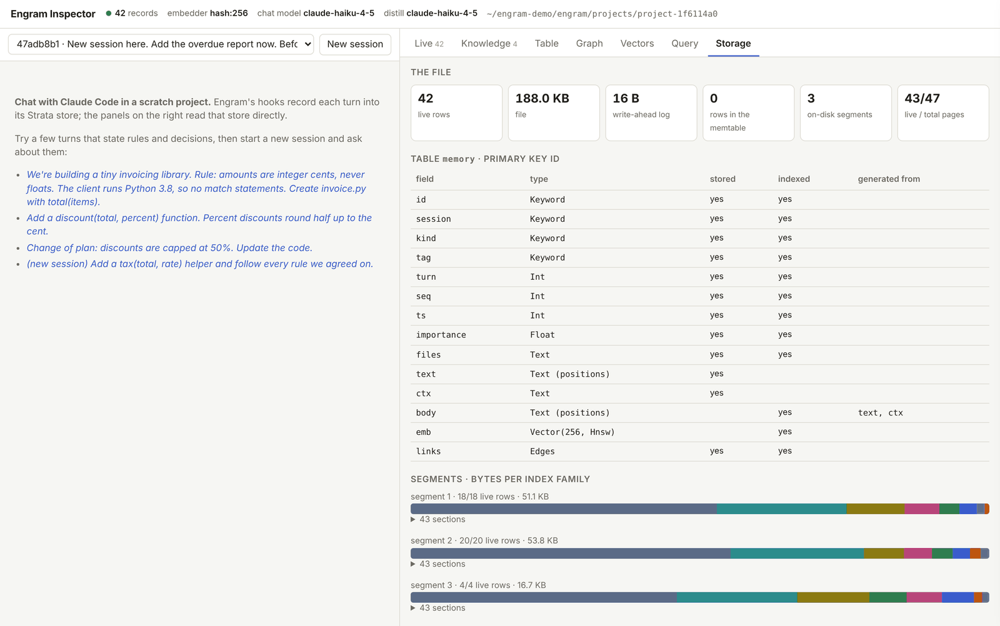

The live inspector
Reference, rendered from docs/chloectx/inspector.md.
These docs describe release 0.3.3.
On this page
A local web app for watching ChloeCtx work: what the hooks store, what the distiller writes down and what recall injects, for your own sessions or for a chat in a scratch project. Every panel is a query against the project's ChloeDB file, made through the same daemon the hooks talk to. Nothing is simulated: chat turns are real claude -p runs.
Try it in your browser A static copy replays a recorded session. Its SQL runs in a JavaScript model of ChloeDB over the recorded records and vectors.
The inspector runs in two ways: chloectx ui points it at the stores of your own sessions, and demo/run.sh runs it with a chat column against a scratch project.
On your own stores: chloectx ui#
chloectx ui # http://127.0.0.1:8765/?token=..., opened in your browser

Once ChloeCtx is installed, chloectx ui serves this page from the binary over every store under ~/.local/share/chloectx/projects (or the folder from before the rename, ~/.local/share/engram, on a machine that has it; or --home DIR). Pick a store (one per project directory) and a session. The left column then replays the session from its records, in place of the demo's chat:
- the prompts, the answers and the narration between tool calls;
- each tool call, with its stored result loaded when you open it, and errors in red;
- the briefing injected at session start and, for every prompt, the recall decision, its gate score and the records it injected (each one a link);
- the notes the distiller kept after each turn, with what they superseded or closed, and the turn's episode card.
A session that is still running grows as it goes, and the panels on the right work as described below, against the chosen store. Nothing is written to the stores: reads go through each project's daemon with the same read-only operations the demo allows, so the inspector can stay open while sessions write. The server listens on 127.0.0.1 and wants the random token in the URL it prints (kept in a cookie after the first load); on a remote machine, forward the port with ssh -L 8765:127.0.0.1:8765. The address keeps the view (?store=…&session=…&tab=knowledge).
The header shows the version the server runs and the commit it was built from, and whether the checkout it came from has a newer one: when the page opens it fetches the checkout's upstream branch (at most every ten minutes; check fetches again) and counts the commits since the build that change ChloeCtx or ChloeDB, as chloectx upgrade --check does. When there are some, Update runs chloectx upgrade (pull, build, install, doctor) and shows its output as it goes, kept in upgrade.log beside the stores. The build takes several minutes. The page that started it keeps running the old binary: restart chloectx ui to use the new one. ChloeCtx's daemons restart new on the next hook, and new Claude Code sessions use it on their own. A pull that cannot fast-forward (local commits, a detached checkout) fails as it does on the command line, and nothing is installed.

The demo: chat in a scratch project#
cd chloectx demo/run.sh --model <model> --distill-model <small model> # opens http://127.0.0.1:8765
| option | effect |
|---|---|
--model |
the model for the chat (default: the claude CLI's) |
--distill-model |
the model ChloeCtx distills each turn with (default: --model) |
--embedder hash:256 |
a model-free hash embedder, so nothing needs downloading |
--data DIR |
where the scratch project and its store live (default ~/chloectx-demo; ~/engram-demo on a machine that has that one from before the rename) |
--budget USD |
maximum spend per chat turn (default 2.0) |
The server is standard-library Python (chloectx/demo/server.py) and the page is one HTML file (chloectx/demo/index.html). Chat turns run with --setting-sources project,local, so your own plugins and hooks stay out of the demo. The browser can only call the daemon's read-only operations.
A walkthrough#
The screenshots on this page come from one short session recorded for this documentation, with a small model for the chat and for distillation and the hash embedder. Two turns in a first session:
We're starting a small Python CLI for a community library to track book loans. Decisions: store loans in a JSON file (loans.json), not SQLite, because the librarian's laptop is locked down and nothing can be installed. Always use ISO 8601 dates. Later we will need an overdue report that prints at most 40 characters per line, for the receipt printer. For now, create loans.py with
addandreturncommands. Keep it short.Add a small unittest for add and return, and run it.
Then a new Claude Code session, whose context starts empty:
Add the overdue report now. Before you start, tell me what storage we chose and why, and any constraint on the report's output.

The new session answered correctly: JSON in loans.json because nothing can be installed on the librarian's laptop, only the standard library, and at most 40 characters per line for the receipt printer. None of it was in the new session's context when it started. It came from the briefing ChloeCtx injected at SessionStart (1,741 characters), built from the knowledge the distiller wrote after the first turn. Recall for the prompt itself was skipped by the gate (G = 3.61 on 30 candidates), because the briefing had already delivered what mattered.
By the end, the three turns had become 42 records in three segments: prompts, tool calls and results, answers, episode cards, entities, and the distilled decision, rule and planned work.
The panels#
Finding an entity or a file#
The box at the top right completes the names of entities and the paths of files as you type (count finds count sheet, src/ the files under src), most linked first: an entity row counts the records that link to it. It is a prefix query on the id column, PREFIX(id, 'e:count') for names and PREFIX(id, 'f:src/') for paths, ordered by that count. When the exact prefix leaves room in the list of ten, names one typo away (two from six letters) follow, marked as typos, so cuont still finds count sheet. Picking one opens it with the records that link to it. The graph's seed box completes the same way.
Live#

Every record the hooks and the distiller write, and every daemon decision as it happens: SESSIONSTART with the briefing size, RECALL with the gate score and its evidence features (max_cos, max_cov, bm_gap, cos_gap, agree, cue), and DISTILL with the items kept and the cost.
Knowledge#

The durable knowledge: decisions, preferences (rules), facts and planned work. Each item says where it came from (distilled by the model, or cue when a sentence like "Always use ISO 8601 dates" was picked up directly from the prompt), and links to the turn and entities it is about. Superseded and completed items can be shown too.
Table#

The memory table itself, paged, filterable by kind, session and a MATCH expression.
Graph#

Records are linked to the turn they came from, the files they touch (f:loans.json) and the entities they are about (e:receipt printer). These are ChloeDB EDGES fields, so the panel can run REACHABLE traversals from any seed, as in the graph queries.
Vectors#

Every record's vector, projected on its first two principal components. A text query is embedded with the store's embedder and its top ten neighbours are drawn and listed with their similarity. Here why JSON instead of SQLite finds the distilled decision first (0.415).
Query#

An SQL console over the store, read-only, with the executor's plan and timings. A text parameter bound as a vector is embedded by the store's embedder, so hybrid queries work as written. It can also run ChloeCtx's own hybrid search, the one recall uses.
SELECT id, kind, text FROM memory
WHERE kind IN ('decision', 'preference')
ORDER BY similarity(emb, :q) DESC LIMIT 5
Storage#

The table's schema and fields, its segments, the memtable, and the file's size by component.